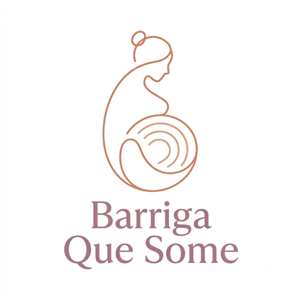
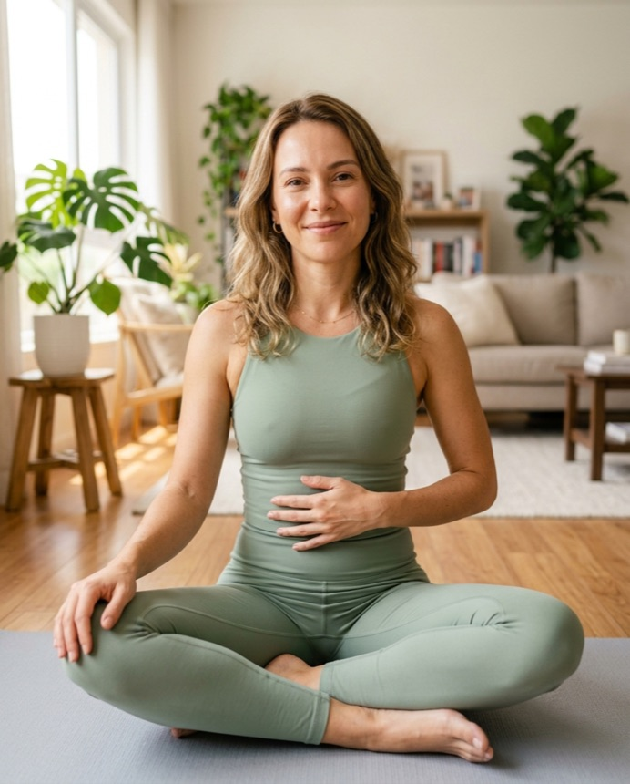
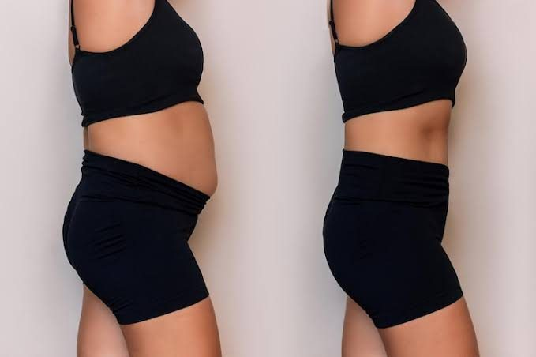
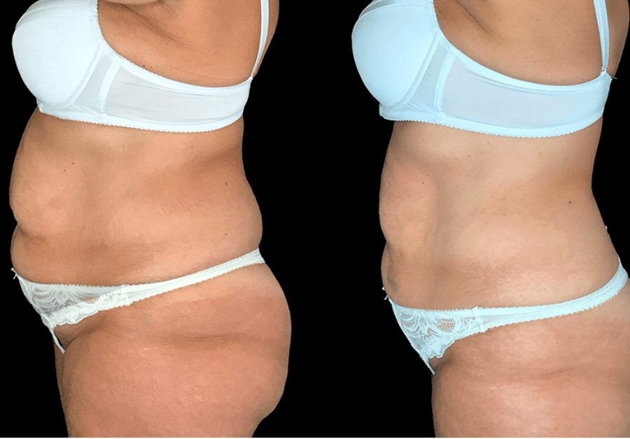
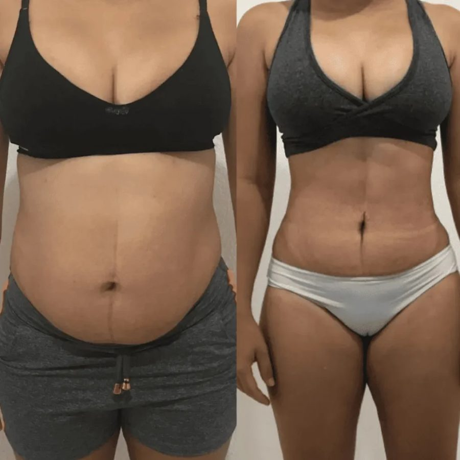

O Reconexão Materna é um passo a passo de bem-estar, feito para mães que já tentaram de tudo e sentem que o corpo “não volta” — reativando as 3 camadas na ordem certa, em casa, no seu tempo.

QUERO RECONECTAR MEU CORPOacesso imediato · garantia de 7 diasMovimento de bem-estar, não prescrição. Cada corpo e cada parto são únicos.
Se você se reconhece aqui, você não está sozinha:
A boa notícia: dá pra reconectar. Na ordem certa, poucos minutos por dia, sem treino pesado.
Depois da gestação, o corpo fica “travado no padrão da gravidez”. Dieta e academia não resolvem porque não é peso — é conexão. E ela volta numa ordem específica:
A base de tudo. Reconecta o diafragma e “liga” novamente o core profundo que a gestação desativou.
Transverso e assoalho pélvico — a cinta natural do corpo. É o que dá sustentação, segura o xixi e faz a barriga parar de projetar.
O corpo sai do “padrão da gestação”, a barriga se recolhe e as dores nas costas dão trégua.
É por isso que abdominal comum, para quem tem afastamento, muitas vezes até piora. Faltava reativar as camadas — na ordem: respiração → core profundo → postura.
Eu sou Sophia Pavrosk, mãe e criadora do método Reconexão Materna. Também já passei por essa barriga que “não volta”.
Criei o Reconexão Materna depois de entender que o corpo pós-parto não precisa de mais esforço — precisa de reconexão, na ordem certa. Desde então, ajudei mais de 40 mil mães a voltarem a se reconhecer no espelho.



Resultados reais de mães. Cada corpo e cada parto são únicos — resultados variam.
Pagamento seguro · Acesso liberado na hora, no seu celular.
Entre, faça o autoteste, comece a rotina. Se em 7 dias você sentir que não é pra você, é só pedir o reembolso — devolvemos 100%, sem perguntas. O risco é todo nosso.
Não é sobre um corpo perfeito. É sobre voltar a se sentir forte, inteira e confortável no seu próprio corpo — do jeito seguro pra quem foi mãe.
SIM, QUERO ME RECONECTARebook + 3 bônus por R$29,90 · garantia de 7 dias